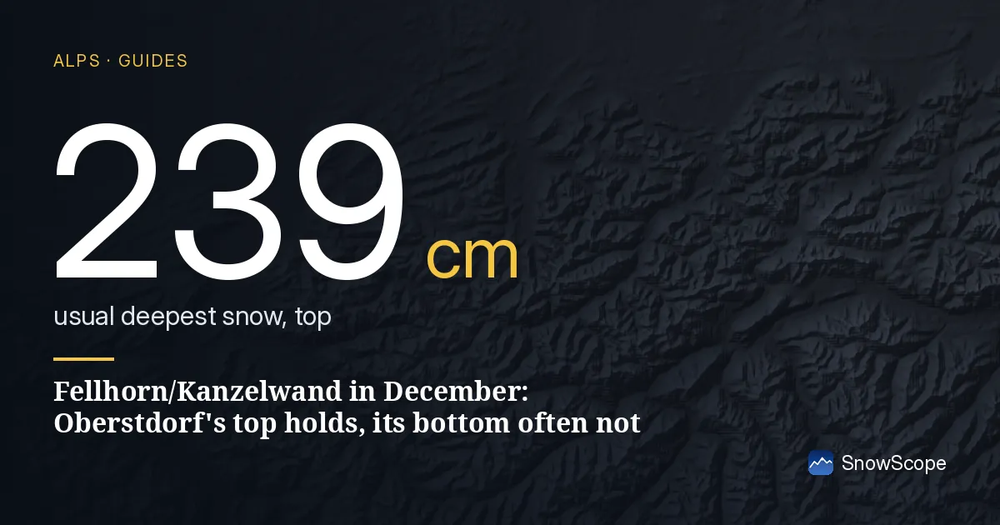

Fellhorn/Kanzelwand in December: Oberstdorf's top holds, its bottom often not
Fellhorn/Kanzelwand's December snow depth depends entirely on where you ski. The upper mountain stays reliable while the valley floor stays thin, forcing a choice: pay for the cable car down or book later in winter when the base catches up.
See the live snow forecast for Fellhorn/Kanzelwand in the SnowScope appSnow depth, powder alerts and the 3D map, free.
Upper mountain: where December snow lives
The top at 1965 m sits in a different winter from the village. On a typical 15 December it carries 63 cm, and 93 per cent of the past 46 winters had 30 cm or more in both the week of 15-21 December and Christmas week. By 24 December the typical depth reaches 88 cm.
This stability makes the upper runs the safest December bet. The ridge itself is exposed to wind after storms, so check the Bavarian and Vorarlberg avalanche bulletins before leaving the piste.


Mid-mountain: the swing zone
At 1441 m, mid-mountain swings between reliable and thin. A typical 15 December has 30 cm. The odds improve as Christmas nears: 59 per cent of winters reached 30 cm in the week of 15-21 December, rising to 70 per cent by Christmas week.
This is where your week matters. Book 15-21 December and you'll find 30 cm on most days; book 8-14 December and you face a coin toss. By Christmas week the bet turns in your favour.
The valley base: often too thin to trust
At 918 m, December is unreliable. The typical 15 December depth is just 10 cm, and 11 of the past 46 winters had bare ground on that date. Only 13 per cent of winters saw 30 cm in Christmas week. The usual first day with 30 cm at the base is 21 January.
These numbers mean: plan to descend by cable car, or save this resort for January and February when the base matures. Last winter was worse than typical—just 2 cm on 15 December and 0 cm by Christmas Day.
The long view: December is weakening
Over the past 15 winters, December has thinned compared to the first 15 winters of records (1980-81 to 1994-95). The top averages 59 cm now against 63 cm then; mid-mountain fell from 34 cm to 28 cm. The share of winters with 30 cm at mid-mountain in Christmas week dropped from 73 per cent to 53 per cent.
This trend suggests booking Christmas week at higher elevations only, or shifting your December trip earlier in the month when the top is freshest.
Cost: the Advent window pays
The 2026-27 season runs one price (EUR 72.90 per day) through the Advent period until 20 December, then the main season starts. The 6-day pass costs EUR 344.50 in Advent and EUR 382.80 after, saving EUR 38.30 if you finish by 20 December.
The pass covers all lifts and cable cars in Oberstdorf and the Kleinwalsertal, so you can move between areas. A week bookended by 15-20 December gives you the price break and the better odds at mid-mountain.
Oberjoch: cheaper but thinner
Oberjoch near Bad Hindelang costs less (EUR 55 a day, EUR 278 for 6 days) but sits lower and thins faster. Its top at 1556 m has 30 cm on a typical 15 December versus 63 cm here; mid-mountain only reaches 30 cm in 28 per cent of winters in the week of 15-21 December. Opening is planned for 11 December, weather-dependent.
If budget is the priority and you can wait until after Christmas, Oberjoch works. For December reliability, Fellhorn/Kanzelwand's extra cost buys real snow.
Tips for skiers
- Book your 6-day pass to end by 20 December and pay the Advent rate (EUR 344.50 instead of EUR 382.80 after the 20th).
- Expect to ride the cable car down most December days; don't rely on 30 cm at the base until January.
- If wind closes the top, use your regional pass to move to mid-mountain terrain or switch to neighbouring Kleinwalsertal lifts.
- In Christmas week, mid-mountain offers the best balance of snow depth and consistent conditions across both elevations.
- After fresh snow on the exposed ridge, consult the Bavarian (Lawinenwarndienst Bayern) and Vorarlberg avalanche bulletins before skiing off-piste.
About these numbers
Resort snow depths are the deepest snow on the resort's upper slopes on the date shown; they are estimates for an area, not a measurement at one point. Forecasts can change. Always read the official avalanche bulletin before going off-piste.
Official avalanche bulletins: Lawinenwarndienst Bayern
Cite this report
For research, teaching or the press: the numbers and charts are free to reuse under CC BY 4.0 with this citation.
SnowScope (2026), Fellhorn/Kanzelwand in December: Oberstdorf's top holds, its bottom often not, https://snowscope.app/blog/en/2026/11/fellhorn-kanzelwand-december-oberstdorf-ski-budget.html, accessed 2026-11-14
SnowScope (Atlas Labs). (2026, November 14). Fellhorn/Kanzelwand in December: Oberstdorf's top holds, its bottom often not. SnowScope snow reports. https://snowscope.app/blog/en/2026/11/fellhorn-kanzelwand-december-oberstdorf-ski-budget.html
BibTeX
@misc{snowscope2026fellhornkanzelwanddecemb,
author = {{SnowScope (Atlas Labs)}},
title = {Fellhorn/Kanzelwand in December: Oberstdorf's top holds, its bottom often not},
year = {2026},
month = nov,
howpublished = {\url{https://snowscope.app/blog/en/2026/11/fellhorn-kanzelwand-december-oberstdorf-ski-budget.html}},
note = {Published 2026-11-14 16:14 UTC; accessed 2026-11-14}
}· CC BY 4.0 · Methods, data and tools →
Fellhorn/Kanzelwand: snow and temperature by height, this winter vs last (tools) →
Follow Fellhorn/Kanzelwand
Free: a message when fresh snow is coming, and the forecast every morning.
More snow reports

Saas-Fee gets 22 cm on upper slopes next week, with Thursday 26 November the heaviest day. Forecast from 16 November 2026.

Next week Megève's top slopes will see 27 cm of snow (range 9–46 cm). Wednesday 25 brings the peak, with 7 cm. Data from 16 November.

Mayrhofen forecast for 23–29 November: top gets 17 cm (2–31 cm range), best day is 29 November with 5–10 cm. Data from 16 November.